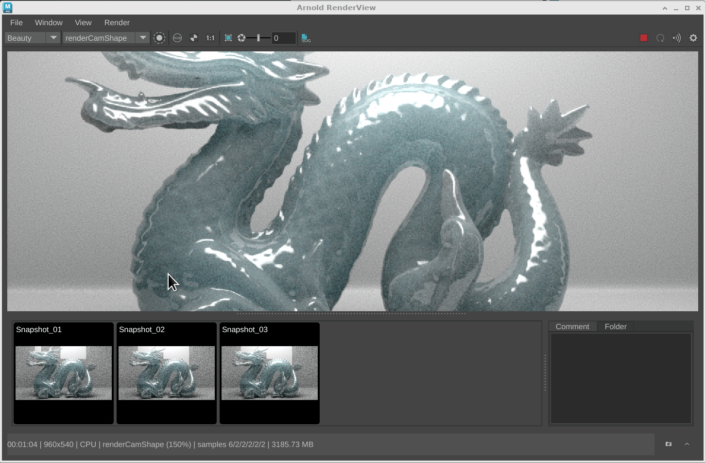
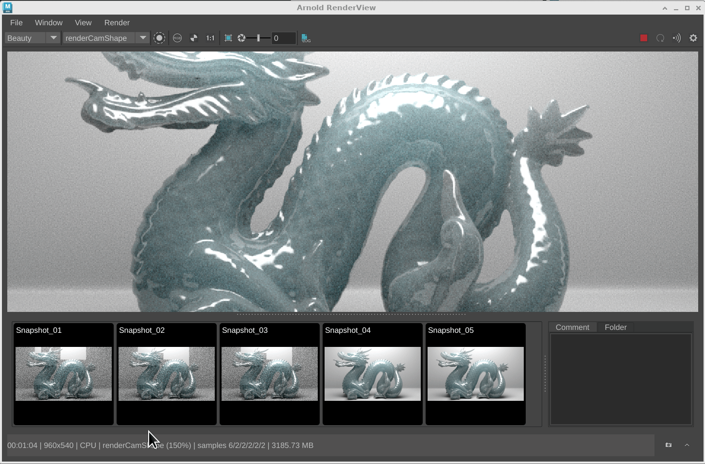
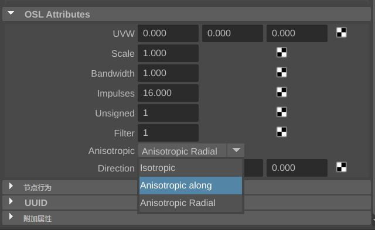

了解自 Maya 2025 起 Arnold 中的新特性。
MtoA 5.4.1.2 新特性
Maya 2025.1 附带 MtoA 5.4.1.2，其中包括 Arnold 7.3.1.1。
此版本更新了降噪，改进了 MaterialX 和 OCIO 支持，支持使用 API 在视口中显示程序曲线，还提供了多项错误修复。
有关最近添加的功能和错误修复的完整列表，请参见 Arnold for Maya 发行说明。
默认情况下，使用 Intel Open Image Denoise (OIDN) 降噪
Intel® Open Image Denoiser 成像器现已默认添加到新场景中 (MTOA-1787)。
| 未使用降噪 | 使用 imager_denoiser_oidn |
对 Arnold 渲染视图快照的改进
Arnold 渲染视图中的快照工作流和界面具有多个增强功能和行为。
-
在 Arnold 渲染视图中按 S 热键，可以保存快照。
-
改进了“快照”(Snapshot)按钮的 UI (ARNOLD-232)
- 现在，在选择第二个快照时，可以使用 Ctrl 键修改器比较具有相同分辨率的快照。
- 现在，您可以使用 Shift 修改器选择多个快照，还可以使用 Delete 键删除多个选定快照。
属性编辑器中的 OSL 枚举支持
在 OSL 代码节点上，类型为 ENUM 的着色器参数创建一个包含可用选项的组合框 (MTOA-1781)
显示为下拉列表的 OSL 枚举参数值
更多增强功能
- 向 aiRampRgb 添加了新的预设：我们向 aiRamp RGB 节点添加了超过 100 个预设 (MTOA-1630)
- 在创建新的 aiVolume 节点时指定 aiStandardVolume：创建新的 aiVolume 节点时，将创建新的 aiStandardVolume 着色器并将其指定给新节点 (MTOA-1803)
- 将 Intel® Open Image Denoise (OIDN) 更新为版本 2.2.2：更新的降噪器在 CPU 性能方面提高了 10%，包括一些关键的错误修复，能够更好地处理高频细节。(ARNOLD-14772)
- 对渐进式负 AA 过程运行 OptiX 降噪器：OptiX 降噪器成像器现在对低分辨率渐进式过程（AA < 0 的渲染）进行降噪。这应会在 IPR 中产生更高质量的反馈。(ARNOLD-11487)

左侧显示了之前的行为，即降噪仅应用于 AA > 0 的过程。右侧是对所有渐进式过程进行降噪的新行为。
- MaterialX 节点定义：Arnold 明暗器的 MaterialX 节点定义现在使用标准曲面明暗器和体积明暗器类型，这使它们更易于在 DCC 中使用，并与标准库明暗器混合。Arnold MaterialX 明暗器的 UI 也得到了改进，添加了参数组和节点类别。（ARNOLD-14717、ARNOLD-14736、ARNOLD-14716）
- OCIO 环境变量优先级：OCIO 环境变量现在优先于 Arnold OCIO 颜色管理器中设置的配置文件以及内置的 OCIO 配置文件。OCIO 颜色管理器中新增了 `ignore_environment_variable` 参数，导致 Arnold 忽略环境变量的值并恢复为先前的行为。现在，maketx 也会考虑 OCIO 环境变量。(ARNOLD-9012)
- 程序视口 API 中的曲线：现在，在 `AI_PROC_POLYGONS` 视口模式下，程序返回曲线节点。这只是 API 更改。MtoA 尚未使用此 API 在视口中显示曲线。(ARNOLD-14756)
USD 增强功能
- 改进了对 USD 摄影机的支持 (MTOA-1597)
- USD 后台文件中的摄影机显示在“渲染视图摄影机”(Render View Camera)列表中
- 批渲染时，可以使用 UFE 摄影机路径
- 如果将 USD 后台文件摄影机设置为“默认”(Default)或“渲染”(Render)用途，则这些摄影机将在“渲染设置”(Render Settings)中列出。
- 对自定义程序使用灯光链接：现在，可以在渲染代理中对 Yeti 等自定义程序使用灯光链接。(usd#1730)
- 改进的工具提示：DCC 中适用于 USD Arnold 节点的工具提示已得到显著改进。(usd#1835)
- 成像器节点支持：针对新的 Arnold `AI_NODE_IMAGER` 节点类型提供 USD 支持。(usd#1870)
- 将 Arnold 选项导出为 UsdRenderSettings：Arnold USD 导出器可将 Arnold 选项节点转换为 UsdRenderSettings、UsdRenderProduct 和 UsdRenderVar 节点。（usd#1852、usd#1865）
- 对具有速度的点使用运动模糊：现在，具有速度属性的点使用运动模糊进行渲染。(usd#1868)
- 更好的透射光线深度默认值：将默认的透射深度设置为 8，以便默认设置更加适用于玻璃，并与 HtoA 和 MtoA 等其他 Arnold 插件中的默认设置相匹配。(usd#1889)
API 更改
公共 API 现在可用于成像器。这在 Arnold 中增加了对自定义和第三方成像器的支持。(ARNOLD-10322)
有关成像器插件的示例，请参见《Arnold 开发人员手册》中的成像器节点。
该 API 基于新的 `AI_NODE_IMAGER` 节点类型构建，并通过两个主 API 实现。
imager_evaluate
`imager_evaluate` 用于修改渲染的输出像素。
```c++ #define imager_evaluate static void ImagerEvaluate(AtRenderSession* render_session, AtNode* node, struct AtOutputIterator* iterator, int bucket_xo, int bucket_yo, int bucket_size_x, int bucket_size_y, uint16_t tid) ```
imager_prepare
`imager_prepare` 是一个可选 API，用于查询成像器将接收的输出并准备任何特定于解算的数据。
```c++ #define imager_prepare static void ImagerPrepare(AtRenderSession* render_session, AtNode* node, const AtNode* driver, struct AtOutputIterator* iterator, AtImagerSchedule& schedule); ```
此外，还有一些用于 `imager_prepare` 方法的辅助对象 API。这些 API 允许您请求为成像器求值渲染的额外输入，并添加用户可能希望写入驱动程序的额外输出层。
```c++ AI_API bool AiImagerAddInput(AtRenderSession* render_session, const AtNode* imager, const AtNode* driver, int aov_type, AtString aov_name, AtNode* filter); AI_API bool AiImagerAddOutput(AtRenderSession* render_session, const AtNode* imager, const AtNode* driver, int output_type, AtString output_name); ```